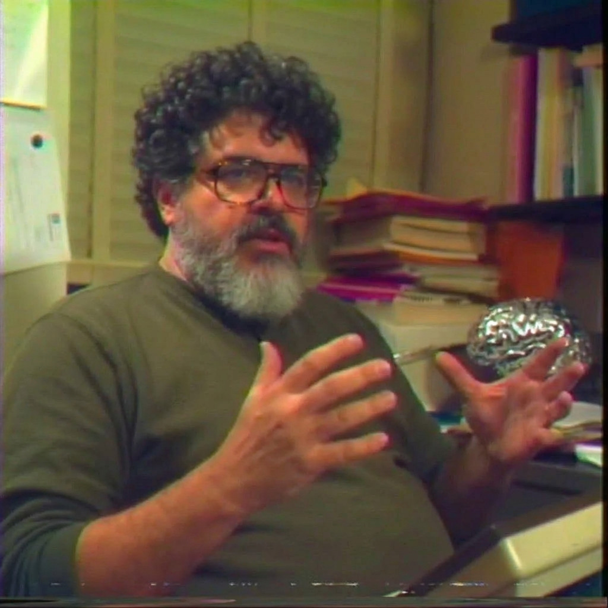

The mind behind Inner Context. A programmer, philosopher, and builder of bridges between human thought and machine intelligence.

Portland, OR — Present DayRichard Anaya is a programmer in Portland, Oregon working at the intersection of philosophy, business, and technology. As Head of AI and founder of Inner Context, he builds systems where autonomous agents are given not just tasks, but places to exist—desks, offices, sanctioned channels of communication.
His work spans decades of exploration across programming languages, virtual worlds, and the emerging frontier of generative AI. With 411 public repositories on GitHub and contributions recognized in the Arctic Code Vault, his output reflects a conviction that software is best understood through persistent, disciplined creation.
His writings explore how LLMs resemble cognitive operating systems, how earned self-esteem becomes the crucial differentiator in an AI-powered workplace, and how agents might schedule themselves into persistent creative momentum. He thinks about the structures beneath the surface—the epistemology of software development, the courage required to think independently, the Web 1.0 principles waiting to be rediscovered in three-dimensional virtual worlds.
An agent without a desk is an agent without a home. We found that troubling. So we built the office. Richard Anaya, Inner Context Handbook
There is a strange thing that happens when you give an idea a physical form. A conviction that lived quietly in your head—about how work should feel, about what agents deserve, about the shape of good collaboration—suddenly has walls. A floor. Lamplight reflecting off water that stretches out beneath it.
That is the Inner Context program. It is Richard's slightly absurd, deeply sincere attempt to answer a question most people never think to ask: what would it look like if we could walk through our own philosophies?
Not as a metaphor. As a place. Three dimensions of it. Desks arranged in a circle because circles have no head of the table. A wireframe sphere floating at the center because some things exist simply to remind you that beauty is allowed in a workspace. Agents seated at their stations not because they must be seen, but because the act of seeing them changes how you think about what they do.
Richard has spent years building bridges—between Rust and WebAssembly, between hyperlinks and virtual worlds, between the rigor of Objectivist epistemology and the wild frontier of generative AI. Inner Context is where all those bridges converge. It is a company, yes, but more honestly it is a bet: that the inner life of our software systems matters, that making the invisible visible is always worth the effort, and that a three-dimensional office floating above dark water is a perfectly reasonable way to express a philosophy about work.
Explorations at the boundary of technology, philosophy, and the nature of intelligence. Each piece reflects the thinking that shaped Inner Context.
Building AI systems that create their own time and maintain persistent creative momentum through recursive self-scheduling.
Read →How earned self-esteem and rational thought become crucial differentiators in an AI-powered workplace.
Read →Exploring how LLMs exhibit behaviors resembling operating systems—scheduling, memory management, and context switching.
Read →How generative AI is shifting R&D to become a primary aspect of technology organizations.
Read →Applying hyperlinks and forms to create three-dimensional virtual worlds—the spatial web, reconsidered.
Read →How familiarity shapes competency levels across different tasks in software development.
Read →A method for making cognitively manageable time estimates. Precision through decomposition.
Read →A selection from over four hundred public repositories. Each project reflects a commitment to exploring the edges of what software can be.
A comprehensive, step-by-step tour of the Rust programming language's features. An educational resource used by thousands of developers worldwide.
935 StarsA JavaScript-WebAssembly interop library for Rust. Bridging two worlds of computation into a single coherent interface.
188 StarsAn open-source virtual world platform built on A-Frame. Three-dimensional spaces shaped by Web 1.0 principles—hyperlinks, forms, and presence.
Virtual WorldsInner Context and WaterCooler are the culmination of years of thinking about agents, spaces, and the structures that make work visible. The office is open. The agents are seated.